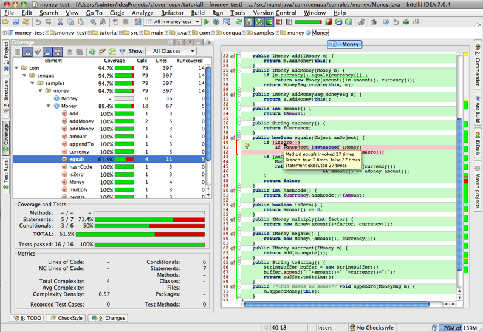

This page contains all user documentation for Clover-for-IDEA. Click a heading in the table below to jump to that section.
On this page:
Overview
The Clover IDEA Plugin allows you to instrument your Java code easily from within the IntelliJ IDEA Java IDE, and then view your coverage results inside IDEA.
Screenshot: Clover for IDEA Plugin

Using the plugin
We recommend starting your adventure with Clover for IDEA with a following lecture:
If you need more details how given features work, or how to efficiently work with Clover, you can read about:
- 2. Exploration of coverage in IDEA
- 3. Exploration of test results in IDEA
- 4. Scope of instrumentation in IDEA
- 5. IDEA configuration options
- 6. Generating reports in IDEA
- 7. Test Optimization for IDEA
For more advanced topics, like performance tuning, see:
FAQ
See the FAQ. You can also search posts with the clover tag on Atlassian Community.